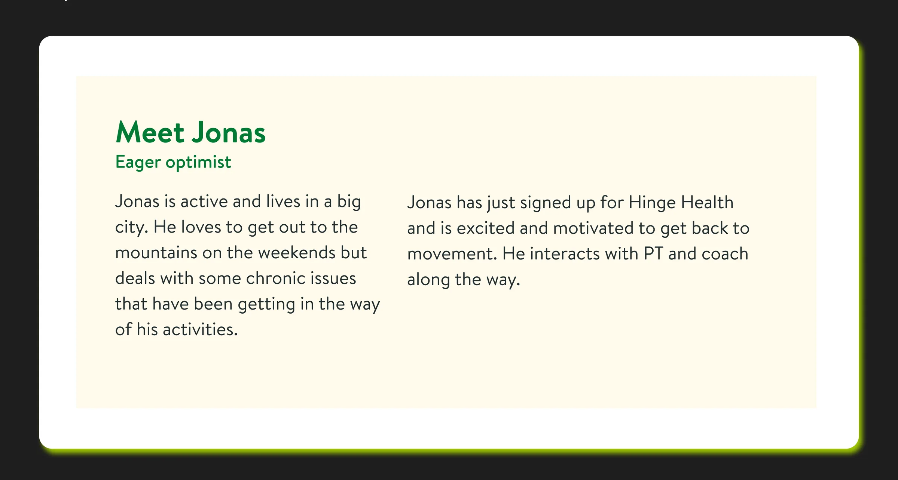
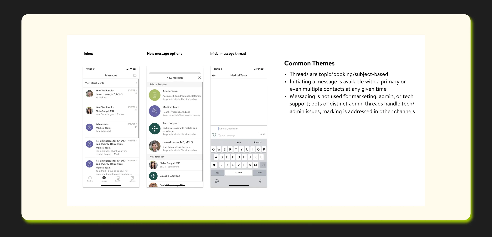
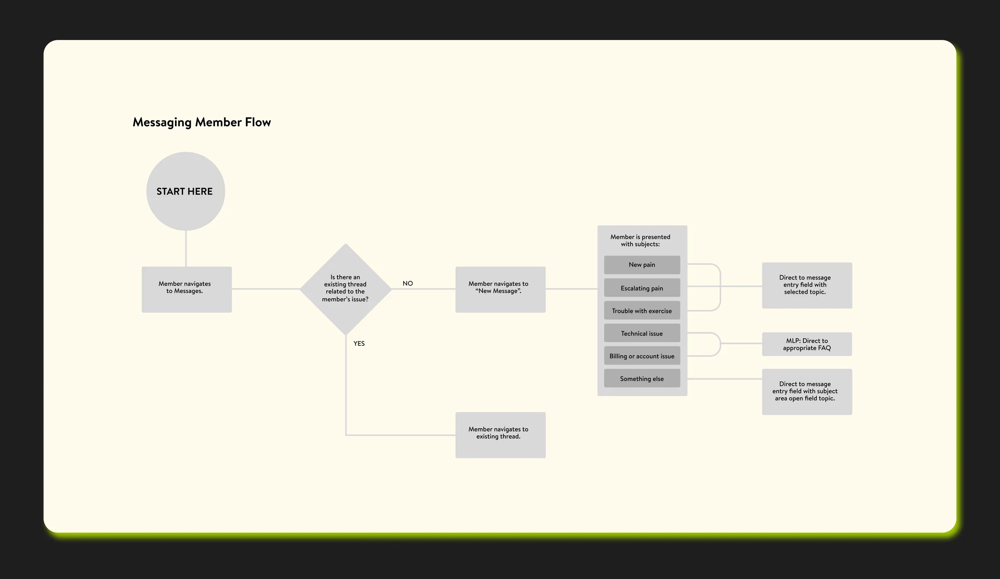
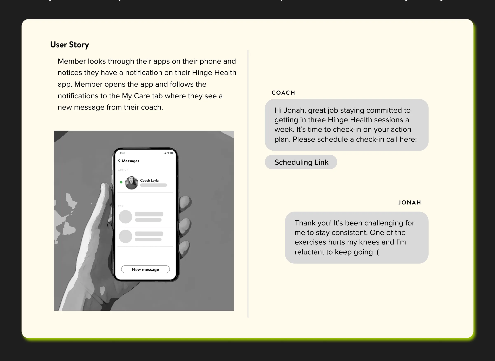
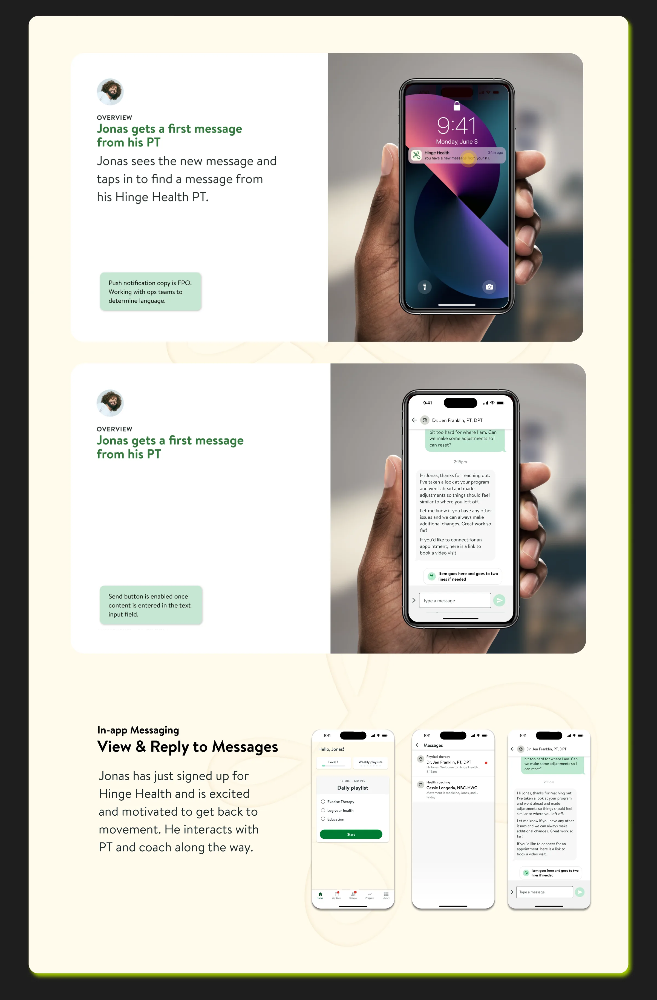
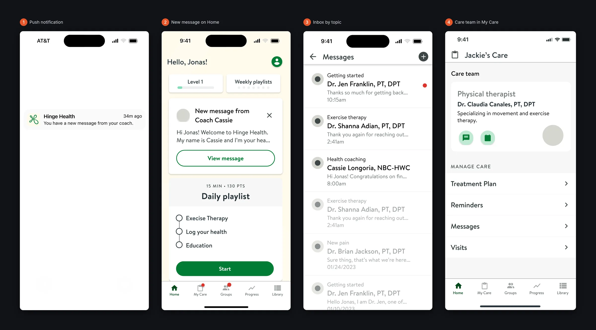
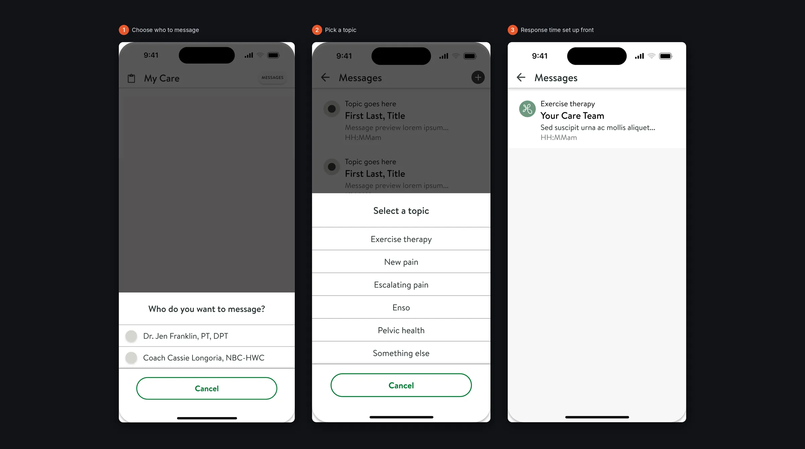
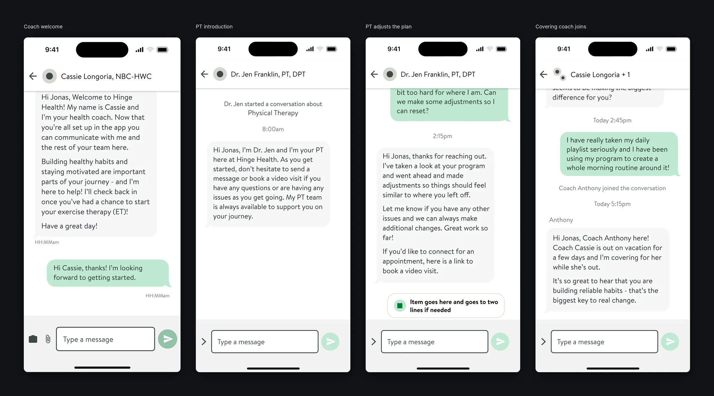
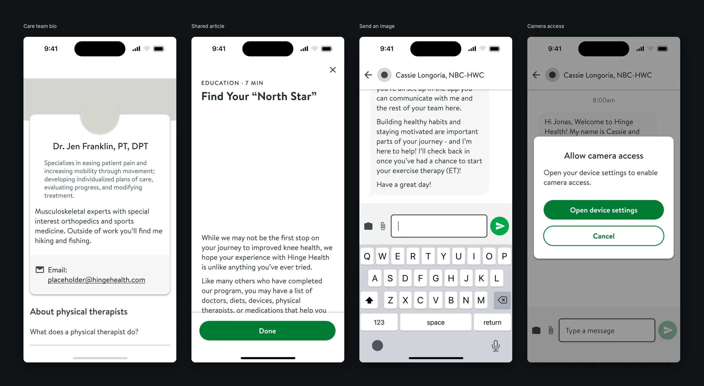

Problem Statement
How might we build a scalable messaging feature for personalized digital health that prioritizes timely, secure communication between members and their care team?
Role & Responsibilities
As the Lead Product Designer, I drove the end-to-end UX for the in-app messaging experience, collaborating closely with a PM, engineers, a content strategist, and clinical experts. I led research, journey mapping, and co-creation sessions to uncover communication pain points between patients and clinicians.
I guided my design team through concept development, prototyping, and validation, ensuring the final solution was HIPAA-compliant, accessible, and scalable.
I led a small team of product designers. I onboarded new designers to the project, ran a weekly grooming session where I assigned tasks, checked on progress and removed any blockers, and oversaw design quality before anything shipped.
User Types
To ground the design in real-world needs, I began by identifying and defining key user types involved in the messaging experience. These included patients undergoing MSK therapy, health coaches, and clinicians such as physical therapists. Each group had distinct goals, constraints, and communication styles.
Meet Jonas: Jonas is active and lives in a big city. He loves to get out to the mountains on the weekends but deals with some chronic issues that have been getting in the way of his activities. Jonas has just signed up for Hinge Health and is excited and motivated to get back to movement.

Competitive Analysis
To inform our design direction, I conducted a focused competitive analysis of in-app messaging experiences across health tech and consumer apps—such as Teladoc, Headspace, WhatsApp, and MyChart. I evaluated features like message threading, read receipts, notifications, tone, and accessibility.
This helped identify industry standards, user expectations, and opportunities to differentiate, confirming that threads should be topic/booking/subject-based and that initiating a message should be available with multiple contacts.

Principles from the audit
The competitive audit turned into a few principles the team agreed on before designing:
- Topic first. People message because of a topic or event, so threads are organized by topic, not by person.
- Accuracy and speed. A clear, correct answer matters more than an instant one.
- Keep it personal. Messages come from real, named people with their credentials.
- Be transparent. Members always know who they’re talking to and when to expect a reply.
- Not for marketing or tech support. Those are handled in other channels.
User Journey
With a clear understanding of user types and competitor patterns, I mapped the end-to-end user flow for in-app messaging. This included key touchpoints such as receiving a notification, opening a message, reading and replying, and getting provider responses.
The goal was to create a seamless, intuitive experience that minimized cognitive load and prioritized secure communication between members and their care team.

Scenarios we designed for
We wrote user stories from real care situations and designed the flows around them:
A new injury mid-program
Annie rolls her ankle on a trail run and doesn’t want to lose her progress. She starts a new message, answers a couple of quick questions about what’s going on, and sees that a PT will reply within a day. Dr. Ryan asks a follow-up, updates her exercise therapy for two weeks, and Annie gets a notification that takes her straight to the thread.
From coach to PT
Jonah tells his coach one exercise hurts his knees. After a few messages, the coach loops in a physical therapist. Dr. Chloe sees the thread and the coach’s note in CareHub, swaps the exercises, and lets Jonah know.
A change of care team
Jessie moves from Oregon to Michigan, where her PT isn’t licensed. A new message from Dr. Steph introduces herself as Jessie’s new primary PT, so the change never feels like a gap in care.
Wireframes
Based on the defined user flow, I sketched multiple interaction concepts to explore different approaches for message layout, notifications, and quick replies. I focused on usability, accessibility, and clarity—keeping our clinical users and patients in mind.
I created low-fidelity wireframes in Figma to quickly test and iterate on structural ideas. These wireframes helped align the team early on and enabled faster feedback loops with stakeholders and engineering.

Research, Options & Trade-offs
What research revealed
Members cared more about knowing when they'd get a reply than about instant replies. Uncertainty drove repeat messages.
Directions explored
- Option A: Real-time chat like consumer messaging apps. Dropped: set expectations the care team couldn't meet and raised compliance concerns.
- Option B: Asynchronous secure messaging with clear response-time expectations and care-team identity. Chosen.
Trade-offs
HIPAA requirements limited previews in notifications and attachments, so we designed around generic notifications that link back into the secure app.
High-Fidelity Designs
After validating the low-fidelity concepts, I transitioned to high-fidelity designs that aligned with Hinge Health's brand and design system. I refined UI components, typography, and visual hierarchy to ensure clarity and accessibility, especially for users with limited tech familiarity.
I collaborated closely with engineering to ensure the designs were feasible and production-ready, and I used prototyping to simulate real interactions for stakeholder review and usability testing.

Finding and reading messages
Members reach their messages from a push notification, a new-message card on Home, or the Messages inbox. The inbox groups conversations by topic, such as Getting started, Exercise therapy, Health coaching and New pain, with the care team member’s name and credentials on every thread. My Care shows the whole care team, each with a quick way to message them.

Starting a conversation
Starting a new message takes two choices: who to message, and the topic, from health coaching and exercise therapy to new pain, escalating pain or pelvic health. The thread then sets expectations up front, for example “Your care team responds within 2 days”, which was the biggest source of uncertainty in research.

Conversations with the whole care team
Threads start with a personal welcome from the coach and an introduction from the PT. When a coach is away, a covering coach is added to the thread to reply and leaves when the coach returns, so members always see who they’re talking to. PTs can adjust the exercise plan and share a link to book a video visit right in the conversation.

Details that build trust
Tapping a name opens the care team member’s bio. Coaches can share educational articles that open in the app, and members can send photos with clear permission prompts. The send button stays disabled until there’s something to send, and long messages grow the input up to the screen height.
